【智慧監獄實驗記．2】身心受創後調小欖、被獨囚赤柱監獄 羈留者的強制去留抉擇
在 8 月 19 日的事件後，一共四名羈留者，被帶至赤柱監獄單獨囚禁。
羈留者的探訪時間與還押人士一樣，僅限早上，相比在大潭峽懲教所全日可探訪，少一半時間。
羈留人士在大潭峽懲教所都是穿自己的衣服。推開赤柱監獄探訪室的藍色大門，巴基斯坦人 Ishir 現身時卻穿上棕色的還押人士套裝，上面縫上他的名牌。耷拉着眼皮，大眼睛無神，他顯得疲憊，一開口便說：「我唔知點解，佢哋帶我嚟呢度。我只想回家，唔想有任何問題。」
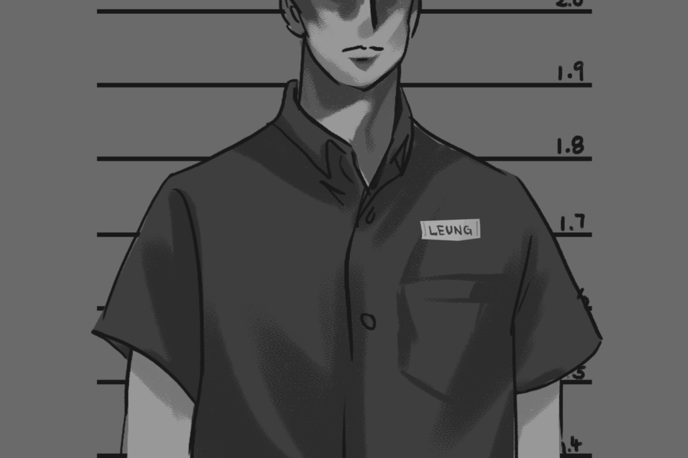
那一晚，有懲教署職員對他說：「監獄嘅規矩，如果多過三個人絕食，便要受懲罰，呢樣係大事，唔係小事。」已放棄免遣返聲請的他強調：「我唔想再有麻煩，我會等入境處話畀我聽，幾時可以返屋企。」
隔着玻璃，他拿着話筒話說到一半，然後響起三聲「咯咯咯」 — 像有人用指頭在另一端敲話筒的聲音。
他的雙手沒有放在通話裝置上，看起來坐立不安。記者問：「你聽到嗎？」他表情也變了，點頭，再說沒兩句話 —
「咯咯咯」又再響起來。
探訪間貼上公告：「為了保安方面的理由，在囚人士與親戚朋友的談話可能會被監聽。」
Ishir 緊張地說：
「在獄中，就算佢哋知我哋唔開心，我哋都要守規矩。」
頭兩個星期，像被當成還押人士，羈留者不准打任何電話 — 職員的答覆是需要與總部安排，著他與福利官聯絡，Ishir 無法聯絡母親，為了抗議，甚至抗拒吃飯，但職員態度似乎毫不在意。兩星期後，他才終獲准致電 — 據三名羈留者所言，這似乎是赤柱監獄第一次收押羈留者，職員需要等待指示之故。
得悉四人被送往赤柱監獄後，身在大潭峽懲教所的羈留者風聲鶴唳。
有一位前絕食者在港數以十載，一直勇於發聲，此事之後卻憂心忡忡。他指了指探訪室的監控鏡頭，「我想幫我自己，但佢哋唔准我同你講嘢，我好恐懼，我唔可以再惹麻煩。」他沿法律途徑申訴聲請，路幾乎已到盡頭。「我哋喺度受苦，如果我出咗事，邊個會照顧我老婆同埋個女？我需要人幫，喺度唔容易生存……我哋需要面對現實。」他最終說：
「我哋係難民，但佢折磨我哋⋯⋯每一日都喺度死去（we’re dying here everyday），畀我走，如果唔係我會死喺度。」
調去赤柱監獄 因大潭峽單獨囚禁室無位？
一轉眼，四人在赤柱監獄被單獨囚禁，已過兩個半月。
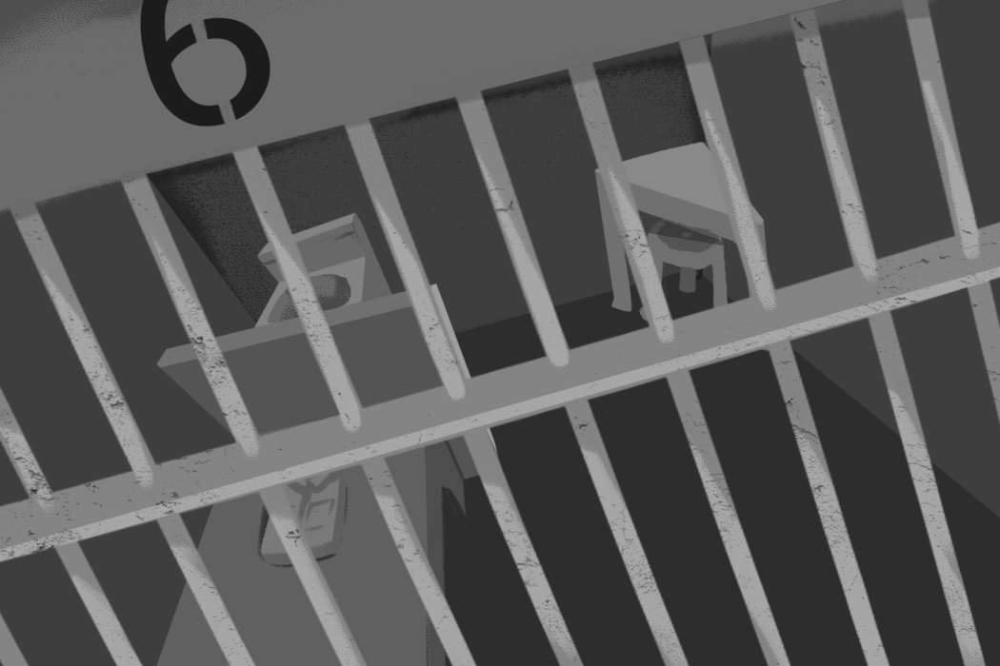
三人接受《立場》採訪，除 Ishir，尚有巴籍羈留者 Hussein（化名）以及被毆打的斯里蘭卡人 Aayansh （化名）。
三人均因第 68B 條「中止與其他在囚人士交往」遭單獨囚禁，每個月均會收到一紙通知，需要簽署 — 但他們都拒絕。他們由職員口中聽來，轉到赤柱的原因各異：第一，總部命令，調查結束才能回去，第二，大潭峽單獨囚禁室已爆滿，需要等候空位，第三，保安理由，需要把他們分隔開來。
羈留者 Hussein 說有職員曾解釋現時安排「淨係釘倉，唔係鎖水記」— 「釘倉」意指禁止與其他囚犯交往，「水記」即是特別組囚室 — 但他反駁，即使如此「都唔駛坐咁耐」。
邵家臻認為，單獨囚禁室空間不夠，只是表面理由，「（署方）最慣常做法就係將啲人打散」。去年有大欖懲教所釋囚曾召開記者會，指曾被職員無理對待，幾名囚友要求索取投訴表格，被勸至放棄後，突然被「踢倉」並單獨囚禁，事件亦被署方稱為「非法活動」。「你哋一齊嘈，就一齊鎖，一水完之後就即刻化整為零，打散晒你哋，分攤晒喺唔同嘅院所囚禁，令到佢哋不能夠再團結」。
要求調回 CIC 無調倉機制？
三人從未見過警察來訪，單獨囚禁又不斷續期。
等了兩個星期，Ishir 已嘗試要求調回 CIC 或者懲教所，他跟高級監督說，跟總懲教主任說，但都沒人給予肯定答案。九月，太平紳士來巡視時，Ishir 焦急地舉手：「如果唔夠位，可以送我返去 CIC 或者大潭峽；我都返去家鄉啦，點解你仲當我係囚犯？呢度好得人驚，著緊呢啲衫。」太平紳士僅僅說：「我哋會處理你嘅個案。」他不明白，形容太平紳士巡監似乎只是一種「表面功夫（formality）」。
入境處個案主任每個月到赤柱會面時，Hussein 均會追問：「阿 sir 我想返 CIC 得唔得？」對方推搪「唔係入境處負責」，著他回大潭峽懲教所。他再問：「幾時放？」對方都不作聲，然後就催促他：「有冇心想返去？」他心知肚明：「佢淨係想我完咗個 case，盡快搞掂就返返去，當我哋假難民。」羈留原因中提及他是治安威脅，服完刑，沒有再犯罪，今日卻被隔離囚禁在高度設防監獄，毗鄰重刑犯，他不解地提出兩個問題。
Aayansh 是唯一一個要求留在赤柱監獄的羈留者。
他說，因曾被多名職員毆打，格外抗拒回去大潭峽懲教所。「如果我返大潭峽，我點生存呢？我會畀人無嘢搵嘢搞，又會被懲罰……我寧願留喺度，安全啲。」他曾向懲教署投訴調查組投訴遭遇，一個多月後，卻獲調查無結果的通知 — 即使毆打發生的房間不設鏡頭，他的傷勢亦理應佐證發生的事。他向入境處個案主任要求回去 CIC，但個案主任斬釘截鐵地說：「你返去嘅機會係零。」隨時間流逝，他抗拒到在九月中放棄聲請，不顧被政治迫害風險，選擇遣返 — 頂多到時再找方法逃去第三個國家 ，甚至請求懲教署職員，讓他在赤柱監獄多待一個月。
《立場》向保安局查詢，懲教署管轄的羈留人士，是否與入境處有「調倉」機制，局方未有回覆。
11 月，三人聽說可調回大潭峽懲教所，但不知何時。
單獨囚禁邁入第四個月，Hussein 至今仍身處赤柱監獄，明年才為司法覆核再上庭，神情堅定地道：「入境處擺我赤柱，我驚驚地都好，我個人不嬲每行一步，都唔會返轉頭，會走到尾，我唔緊要，我照行，我等『行街紙』都等咗差唔多兩年。」
送小欖二十日 困保護室在桶如廁 羈留者：我唔係動物
不過，經過四個月多漫長等待，在大潭峽懲教所、小欖精神病治療中心以及赤柱監獄之間兜轉一輪， Ishir 終於登上被遣返的飛機。
六月，他的媽媽患上重病，進行手術後，只能躺下靜養，因父親在外工作養家，姊妹亦遠嫁，家中需要人照顧母親，因此他已去信高等法院以及入境處，放棄聲請及司法覆核，只求回家。「我好大壓力，又好抑鬱，所以唔想食飯。」有兩三天，他拒絕進食，多名各個職級的職員輪流勸喻，到了第三天，他被帶去醫院見心理學家，結果竟被送到小欖精神病治療中心。
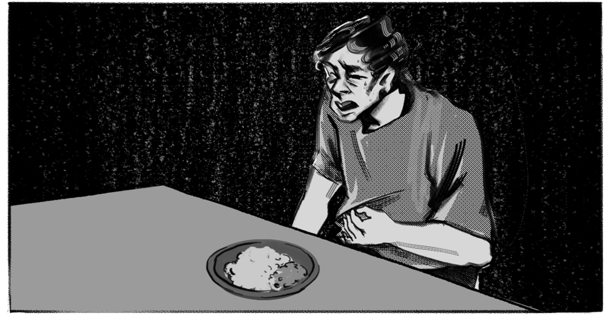
初初被關在單人房，他向職員說索取申訴專員投訴表格，反而被帶入保護室。四面牆是軟墊，沒有床，沒有廁所，職員指着一個便盤，著他在這裡如廁，他愕然問：「點可以喺同一個地方去廁所同食飯？」他寧可硬憋，到了四日後才被調回單人房。
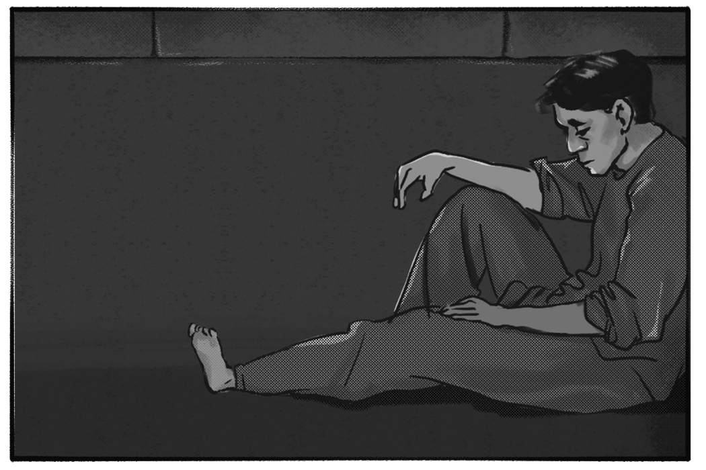
在大潭峽懲教所單獨囚禁，每天仍有一小時的運動放風時間；在小欖的單人囚禁室，卻接近是全天候囚禁，只有前往淋浴時，才能出外五至十分鐘。
二十天後，Ishir 終獲調回大潭峽，一名懲教主任向他說了一番警告意味濃厚的話：「好好表現，你再做啲乜嘢，就送返你去小欖。」Ishir 心底發寒，形容被送往小欖像成為懲罰手段，令他失去尊嚴。「呢度唔係羈留中心，呢度係酷刑中心（torture centre）……我唔係動物。」
才留在大潭峽懲教所三個月，印度籍羈留者 Ali（化名）便兩次被送往小欖精神病治療中心。
記者前往該處探望時，他顯得明顯憔悴，焦燥不安。某一天夜晚，他因長期腹痛，痛楚難當，曾呼喊多次巡邏的職員，對方卻不明白他的語意。他嘗試整爛房中風扇，吸引職員注意 — 結果職員立即出現，卻把他送到小欖精神病院。
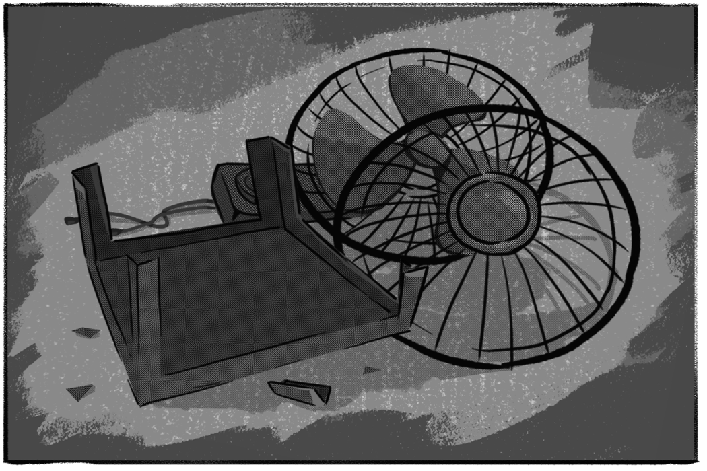
六日之間，其中有兩日在保護室，「我冇去廁所，但係有食嘢」。直至回去大潭峽懲教所後，他才被送到醫院照 X 光。
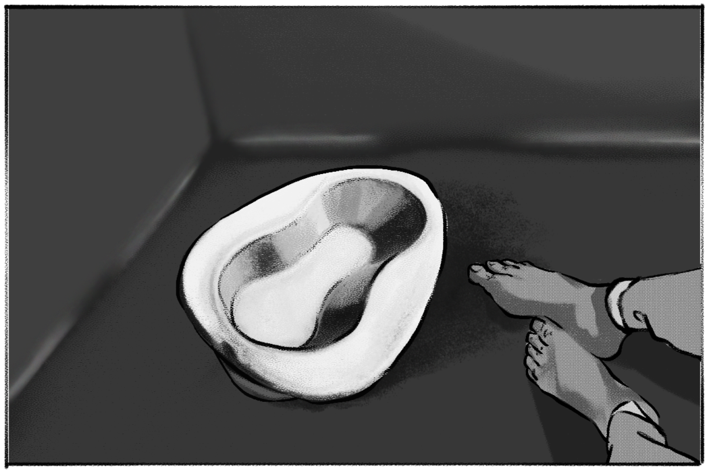
怎料沒多久，Ali 又被關到小欖精神病治療中心，為期足足 14 天 — 兩次加起來也夠 20 天。醫生向他稱，沒有任何診斷出任何毛病，此舉只是「為咗跟進」。他則向醫生請求，不想再入小欖。對「小欖」二字，Ali 的眼神流露明顯恐懼，一直說不會再惹麻煩，不會再投訴，左顧右盼看旁邊的職員。
曾在小欖會診 醫生：部份囚犯難溝通 「唔係精神上有問題」
法醫精神科醫生何美怡曾作為醫管局轄下的非駐院醫生（visiting doctor），在小欖會診任職近九年。「任何一個（囚犯）懲教（人員）送過嚟，小欖就要收。」她曾見過一部份外籍囚犯或來自中國的囚犯不諳中英文，「溝通唔到」，「唔係精神上有問題」，雖然評估期間可安排翻譯，但需額外申請，相當「繁複」。逗留在小欖的時長可由懲教署或由醫生決定，而非駐院醫生無權過問運作。
她指出，囚犯送往保護室一定要經醫生簽紙，但可由懲教署轄下的普通科醫生決定，而如廁只准使用硬紙質便盤（bedpan），因為「唔可以畀任何嘢佢傷害自己」。
懲教署
過去曾指小欖採取分流制度，囚犯經過初步評估後，若非緊急個案，病人會先返回懲教所接受醫護人員觀察，並依指定日期返回小欖跟進病情。
關注囚權、曾在囚的前立法會議員邵家臻指初步評估通常長一星期，而曾接觸被送至小欖囚犯個案的社協幹事蔡耀昌，亦認為二十天屬長時間，按《監獄條例》第 68A 條「保護室」單獨囚禁，要求由醫生評估犯人的醫療需要，但無獨立第三者監察，難以即時或事後申訴，「被無理甚至懲罰性對待，但係又唔容易論證……往往好難追查」。
《立場》向懲教署查詢上述兩起事件是否屬實，羈留者被送往小欖精神病治療中心以及赤柱監獄的次數，署方未有回覆，僅指「被羈留人士如對羈留期間的待遇有不滿，可循不同途徑作出申訴」，不會就個別個案或運作安排作出評論。
患脾臟腫大、皮膚癌不准擔保 「一跣親可能會死」
至於今年約四十歲的羈留者 Omarr（化名）因患有脾臟腫大，時常腹痛。上個月，因劇痛至麻痺，Omarr 連續兩餐吃不下飯，即使努力向職員解釋，仍被送到小欖精神病治療中心，單獨囚禁三天。
他搞不清楚為何身體上出了問題，竟被當成精神有問題。
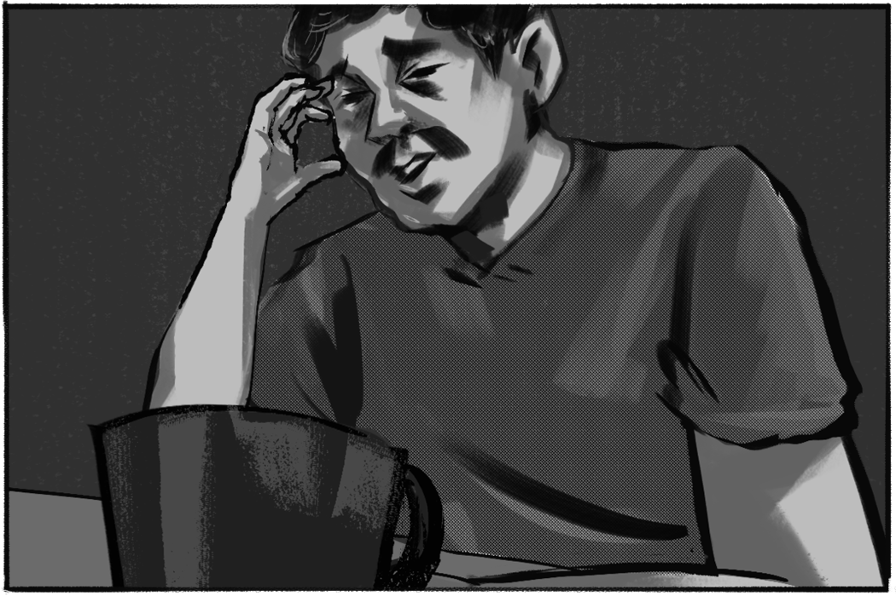
「我每一日都好痛。」為證明所言非虛，探訪室內，Omarr 帶來一疊厚厚的文件，抽出一紙 2019 年來自油麻地皮膚科診所的英文診斷書，貼在玻璃上，並指着其中一行字：「診斷：皮膚，左頸背斑色素。淺表擴散性原位黑色素瘤（Superficial spreading melanoma）。」— 後者是其中一種惡性黑色素瘤的科學名，屬於皮膚癌的一種，診斷書上寫着瘤正不斷生長，底部標明「緊急」。他指着頸項上腫起的淋巴結說，現懷疑自己皮膚癌復發，近日要去醫院切片取樣，再作癌細胞檢驗。
他再抽出另一張伊利沙伯醫院放射治療科的診斷書，日期是上一張的一個月後 — 上面寫着，「脾臟腫大至 13.3cm 」，比正常人長一厘米。
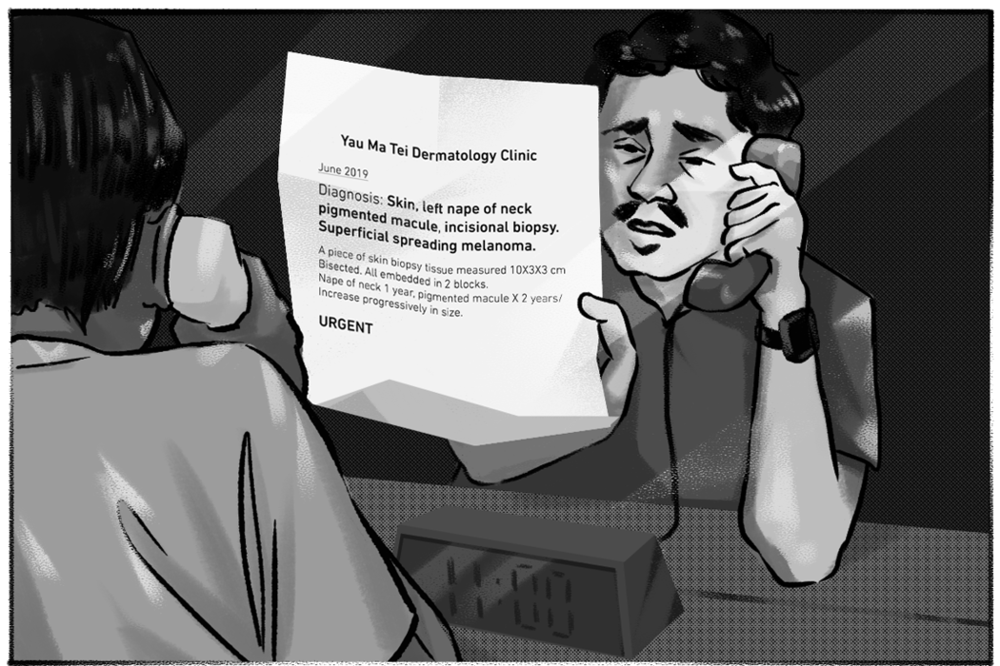
近十年前，Omarr 因受迫害逃來港，向聯合國難民公署尋求庇護，2014 年入境處成立「統一免遣返聲請機制」接手其個案 — 那一年，他的頸部皮膚長出黑班，初初不以為然，到五年後黑斑擴散再往求診，醫生稱情況嚴重，立即轉介至皮膚科檢驗，他才知患癌。一個多月後，他前往醫院做超聲波檢查，卻驗出脾臟腫大。三個月後做手術，切除癌細胞病變組織，不夠一個月，便因犯偷竊罪，判監一年多。他在獄中亦一直有覆診，服刑後便被羈留至今。
獄中，Omarr 曾預先去信 CIC 監督，告知自己有病症，又多次向入境個案主任抗議，表明身體狀況不適宜羈留，對方卻一直堅持他犯過嚴重罪行，「不斷話『我哋要困住你喺度，放唔到你，我哋咩都做唔到，呢度有醫生』。」他再去信太平紳士辦事處投訴，要求入境處釋放，結果入境處個案主任也只是告知懲教署福利官，再把他帶到駐院所醫生面前，問能否釋放他，醫生自然推搪「唔係我責任」。
《立場》向負責太平紳士計劃的行政署查詢事件是否屬實，署方沒有回覆。
按
入境處「等候酷刑聲請獲最終裁定期間的羈留政策」，其中一項考慮不予羈留的因素正包括「正處於嚴重醫療／精神不健康的情況」。不過，入境處近日公佈
最新版的 CIC 運作手冊第 4.73 項則列明，如果羈留者患有急性或有生命危險的疾病，應該被拘留在中心，直到安全為止，才由中心醫生建議獲釋。
再次見面，Omarr 又拿出一張三年前的文件，由九龍醫院精神科主診醫生寫給入境處，列明他患有創傷後遺症及衝動性人格障礙，建議在社區生活以及繼續治療，「由於病人過去受創傷的經歷，在此關頭，羈留對他的精神狀態康復毫無助益。」當時他曾被羈留在 CIC ，但很快已被送至醫院羈留，長約一年多，情況大幅好轉後憑此信獲釋。再被羈留，似乎在重演噩夢。
懲教署至今未公佈大潭峽懲教所的運作手冊，以及羈留者所受的待遇。
「呢度嘅醫生唔係專科醫生。」Omarr 有意向私人醫生求診，但未知能否成事。CIC 運作手冊第 4.8 項指，每個羈留者可以申請經自己、親友或律師選擇的註冊醫生進行一次探訪 — 不過處方回覆《立場》查詢，過去五年內均未收過此要求。
據《監獄規則》第 204 條，候審囚犯可以「為進行辯護的目的，接受其本人或朋友或法律顧問挑選的註冊醫生探訪一次」，條件與法律顧問的公務探訪相同。記者分別致電懲教署總部熱線以及大潭峽懲教所福利官查詢，前者指需要律師去信管方，註明註冊醫生的姓名及探訪時間，再作申請；福利官則強調已安排駐院所醫生及前往公立醫院覆診，不過不清楚條例中「辯護」目的是否限於刑事案件，但指可參考總部說法。
「脾臟會一直繼續變大，唔知幾耐，就會生長去嗰個大小。」在醫院檢驗也驗不出病因，萬一再長大幾厘米，就必須切除器官，Omarr 因此惶惶不可終日，時刻擔憂脾臟因外界撞擊而破裂，「有乜意外，我一跌親或跣親，都可能會死。」掀起衣服下擺，露出因背部疼痛而安上的腰封，他無奈地說：
「我好似就碎裂，身體已支離破碎（It’s like I’m broken. My body is broken）。」
患白血病 為治療權 寧可遣返
兩個患癌症的羈留者，一個仍在掙扎求存，另一個已放棄治療，只求遣返。
患有白血病，即血癌的非洲人 K（化名）已被羈留一年半，因一直得不到任何治療、處方藥或化療，他決心放棄聲請，等候遣返。一年前，CIC 駐院所醫生僅發放止痛藥，K 前往外間醫院覆診後，中心醫生卻不讓他讀自己的醫療報告，他曾為此絕食抗爭，而
入境處曾發聲明回應相關報道，指醫療人員一直提供適切治療。轉到大潭峽懲教所，他拒絕前住醫院覆診，因僅進行驗血檢查，沒有治療方案。「我嘅病情穩定，亦都冇改善，冇乜癥狀……等人幫，我都冇辦法再等落去，延遲咗太長時間。」
因由伊斯蘭教改信基督教，K 和妻子二人在祖國被父兄威脅取去性命，他其後逃往泰國，因身無分文，運毒來港，結果罪成入獄數年。服刑期間，每月一次的海外通話中，祖母告知，因他離國，妻子被岳父以榮譽為名殺死（honor killing），教他隔着話筒幾乎崩潰。
回國或被親人追殺，留港卻會延宕治療，兩種風險之間，他決定選擇前者，準備被遣返。支持他的親人自然大力反對，但他無法不這樣選擇。
佢哋帶我哋嚟大潭峽係精神折磨，逼我哋返去（自己國家）……我別無選擇。」
司法覆核上訴不准親身上庭 交表格「遲咗八日」
來自尼日利亞的羈留者 Nelson（化名）穿過鐵門，於探訪間坐下沒多久，已迫不及待地把法庭傳訊令信件貼在玻璃上。他在 CIC 期間被拒司法覆核申請，仍處於 14 日後的上訴期內，已被轉移至大潭峽懲教所。
按
Justice Centre 今年二月的報告引述入境處數字，由 2014 年至 2020 年，在酷刑聲請上訴階段僅 8 % 聲請人有法律代表 — Nelson 是沒有法律代表的 92% 之一。
據入境處職員透露，在 CIC 的羈留人士就免遣返聲請申請司法覆核時，需親身向法官解釋原因，即使沒有法律代表，仍可親身上庭，亦可在入境事務主任監誓下，羈留人士就資料真確性宣誓，再由朋友或律師代為處理司法覆核事項。
接獲傳訊令後，他向大潭峽懲教所的福利官提出前往法庭，但對方拒絕，他只能在監督下宣誓，再寄出要求上訴延時的表格，但當時「已遲咗八日」，亦無法遞交更多的證明文件（supporting documents） — 最終司法覆核上訴失敗，判詞提到「申請人的理據不足以支持其申請」。他沒有放棄致電聯絡 NGO，終有律師願接手個案。
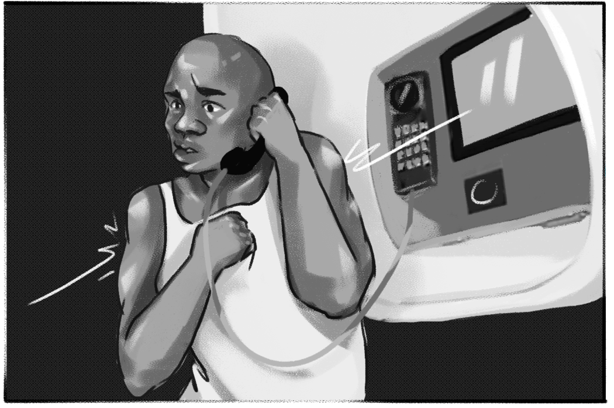
人權律師帝理邁（Mark Daly）形容如聲請人無法回應，或遞交證明文件，是「不公平（unfair）」，是行政手段阻礙司法公義的實例。《立場》曾就事件向保安局查詢大潭峽懲教所內羈留者的上庭安排，局方沒有回應。
「生活喺 CIC 好好多，我人生冇未來，我被拋到呢個地方……所有人喺度，都只係講返家鄉。」偏偏，Nelson 不能回去尼日利亞。他生於東部比亞法拉（Biafra），這裡曾是獨立國家，直至 1970 年被重新併入尼日利亞。作為原住民一份子，他在十九歲參與獨立運動，並加入爭取主權組織 MASSOB，走上街頭，並親眼見證軍警使用流彈，向抗爭者開槍。他的同伴被當地安全部及軍方迫害，「如果你被捕，你會被帶去警署折磨……好多人流亡，被捕，或入獄，甚至在前線中死去。」不幸中，他三次被捕，均在警署遭倒吊起來拷問，並被警棍毆打，被迫認罪。
終於，逾十年前，他輾轉逃往泰國，但簽證很快到期，他又山窮水盡，其他先被遣返的同胞，回國後音訊全無。他打聽到當地的毒品頭子說有辦法續簽，遂選擇運毒來港，服刑數年。
今年港府修訂《入境條例》後，第 37Z 條容許在聲請第一階段初審被拒期間，當局已可聯絡原居國安排遣返事宜 — Nelson 反駁指，個案未完，已通知國家，是「相當不公平」。
司法覆核被拒的判詞稱他參與度低，離國已久，無證據顯示他仍有被針對的風險，Nelson 則激動地說：「佢哋唔明白自己講咩，唔明白尼日利亞政府做嘢嘅方式……如果我仲有選擇嘅，就唔會仲喺度。」
嚴苛環境下 放棄聲請 構成「積極遣返」？
2005 年 CIC 落成以前，域多利監獄一向被用作關押羈留者，同樣是由懲教署管轄，按《監獄條例》規管 — 今日大潭峽懲教所再啟用作羈留用途，時代似乎在走回頭路。
二三十年前，人權律師帝理邁也經手多個越南船民尋求庇護的個案。他記得，政府除了不准越南船民的孩子上學，羈留者身處的域多利監獄非常擁擠，床上有蝨，非常不衛生，「透過否定人嘅權利，令條件變壞，變得嚴苛及具壓迫性（oppressive），逼迫他們離開香港，令人爭論是否屬積極遣返（constructive refoulement）」— 意指間接但有效地迫使難民回到有可能遇到迫害的環境。他指出，許多羈留者或聲請人需要正式法律意見，例如某些個案並無有利的法律理據，就不應給予「假希望」，「某程度上佢哋係羈留緊自己（detaining themselves）」。
「獲得法律代表同諮詢係一個基本人權。」Justice Centre 高級倡議及傳訊主任張皓明強調世界人權宣言第一句「人人生而平等」，「當事人冇任何法律知識，甚至唔識中英文同香港普通法系統，純粹需要一個律師去就佢案件勝訴作出分析，呢一個本身就係一個權利，而呢個權利唔應該被剝奪。」他稱，免遣返聲請的機制核心，正正是識別及評估真正需要保護的人士，即是他有權選擇任何符合制度的方式，如司法覆核。「佢有權為法律決定作出選擇，尊重佢為自己個案爭取 — 成功可以重獲新生，尋求庇護的人權，顯見於此。」
對於入境處說法傾向刑事化（criminalize）羈留者，張皓明認為，即使曾被定罪的羈留者，當局亦應該定下基準，合乎比例地由專業人士如感化官，衡量及評估個案有否重犯風險。「而唔係官僚（做法） — 我睇完你個 case，被定罪你就應該被羈留。人嘅自由唔應該咁決定。」
犯過罪，是否等同失去尋求庇護的權利？
「我已經服過刑，係無罪之身。」身患重疾的 Omarr 亦有同樣困惑，人生似乎因為一次犯罪，便一直被剝奪自由。
「被遣返，係我最唔想嘅事。」Nelson 回看來時路，像拐過許多彎。
「我哋值得第二個機會，我係為咗自己安全（才來港）。
如果喺泰國冇簽證，我一早就被遣返。」
遠在萬里之外，Nelson 的哥哥透過微弱的訊號，在電話中模模糊糊地向記者說：「佢絕對唔可以返嚟，佢一定仲喺警察名單上，我請求你哋，保護佢。」
羈留者成功晤入境處處長 半個月後被送到大潭峽
漩渦中身陷絕望的羈留者，不只一人。至少五名羈留者反映，入境處個案主任不斷勸說他們放棄聲請。另一個憂慮是，全部受訪羈留者均表示，大潭峽懲教所沒有人獲「擔保替代羈留」，擺在他們前面的似乎僅有遣返一途，《立場》向保安局及懲教署查詢大潭峽懲教所獲擔保的羈留者數字，署方回覆指未有備存資料。
今年五月初，阿星與二十多名越南籍羈留者在 CIC 大力抗議，要求見官，於是多名入境處高級職員到訪，包括處長區嘉宏。阿星當時追問：「我有冇機會？出唔出到去？」對方答：「冇問題。」他再問：「幾時出到去？」對方答：「幾時出去唔係我決定，係保安局決定。」《立場》向入境處查詢阿星形容的會面是否屬實，處方沒有回應。
孰料，五月末，他與一班越南人立即被轉到大潭峽懲教所。一個星期後，入境處個案主任跟他說：「你冇機會出去，不如取消，幫你盡快返越南啦。」阿星相信了，便撤銷聲請。「我都冇罪，唔知咩就坐一年，我唔識講，好難過。」
數月等待遣返 羈留者：佢哋想我走，又唔准我走
即使放棄聲請，在緩慢的遣返程序中，羈留者仍需長時間等待，數以月計。
入境處未有回覆《立場》就遣返所需時間的查詢，按其數據，被遣返的羈留者人數近兩年急降，由 2019 年有 1,618 人，到 2020 年受疫情影響僅 632 人，而今年首九個月亦只有 503 人 — 但同時保安局稱仍有 1,686 名免遣返聲請者正候遣返。
據了解，若羈留者沒有有效護照或機票，程序上，入境處向羈留者發出遣返令，便會聯絡原居國領事館啟動遣返程序，並申請緊急旅行文件（emergency travel document），再訂購機票，讓他在指定日期歸國。
多名羈留者亦因遣返程序緩慢不滿。六月，K 已放棄聲請，一個月後收到無日期的遣返令，他問入境處職員：「要等幾耐先遣返？等到出年？」職員僅願意告知他，「你在遣返前都會被羈留。」踏入第二個月，領事館職員說，入境處只告知館方他會在最遲 2024 年刑滿獲釋 — 此番話教他相當震驚，因他服刑完畢，被羈留已一年半，「入境處根本唔在乎」。四個月了，他仍然在等待，越來越焦躁不安。
「佢哋想我走，又唔准我走。佢哋唔放我，又唔想遣返我。」
「我已經承受唔到，而家係任意羈留，毫無根據……佢哋只係想懲罰我哋，不為什麼，就只是懲罰。」
十一月初，入境處終安排一班特別包機，把 40 名越南籍羈留者送回去 — 數名在大潭峽懲教所的羈留者被遣返，等候四個月的阿星是其中之一。
留下來的越南人中，今年 28 歲的阿牛明明獲得司法覆核的機會，可以再上訴，也決定在上月放棄，寧可遣返。他算過，即使要等四五個月仍較划算，「如果我唔放棄，困兩三年，仲耐過五六個月，唔好嘥時間，」當地嚴格規管宗教活動，他因在鄉村辦教會傳揚佛教，被指「不合法傳教」，其後才逃來港，現在回國有機會坐一兩年監，但他實在受不了。
「返去坐一兩年監，同呢度時間一樣，早啲可以自由。」
今年十歲的兒子，每次在電話問：「爸爸你喺邊？我好掛住你。」他心就亂了，怕像武文雄一樣，要等上數年，「做嚟不如返去，都唔知會困幾耐，好耐都冇自由，我唔開心，想快啲有自由。」
14 歲因謀殺罪坐監 23 年，完成服刑後再被羈留 5 年的越南船民武文雄，今年四十多歲，即使有契媽支持，願意供養他，仍未能獲釋。他嘗試再申請人身保護令，卻被拒批法援。單獨囚禁兩個月後，他漸漸放棄希望，甚至怪責自己「累人累物」。
「佢都唔會放我，睇怕都要去越南……去邊都好，邊度都係四海為家。」
關注組成員 Amy 質疑，單獨囚禁屬酷刑，會造成心理影響，「如果酷刑期間想返去（被遣返），係咪真實意願？」
CIC 羈留者增 打非法羈留官司恐更難 律政司：「不適宜」提供數字
回看
立法會今年就《入境條例》修訂的討論，議員何君堯、葛珮帆及容海恩曾多次建議設立禁閉營，關起所有聲請人，局方回覆大潭峽懲教所可收容額外 160 人，羈留空間已多出三分一，又強調會考慮土地資源、基建、人手及管理等，「以期提供足夠的設施羈留現時在港的約 13000 名聲請人。」
問題是，真的有需要羈留更多聲請人嗎？按局方回覆及公開數字，截至九月，現時全港約有1.4 萬名免遣返聲請者，當中八千多宗是司法覆核個案。
入境處回覆《立場》查詢時強調，「只有約 2%」聲請人被羈留。《立場》三次向保安局、入境處及懲教署查詢大潭峽懲教所近月的羈留人數及聲請者佔比，均未獲回覆，然而大潭峽五月啟用，六月有 67 人對比今年三月及七月的數據，青山灣入境事務中心羈留者數字不減反增，由 246 人增至 271 人，免遣返聲請人所佔比例有所減少，而非法入境者數量則上升三倍，至六十多人，中國人佔比最高。
《立場》向入境處查詢，是否就逾期居留、或非法入境後提出聲請，推出新的羈留政策，處方沒有回覆。
行政羈留在免遣返聲請者身上，隨時可發生，他們只能循司法途徑嘗試推翻該決定，但亦更越見困難。
2014 年終審法院曾裁定，入境處行使羈留權力時，須遵守普通法的「Hardial Singh」原則，即若入境處不能在合理時間內完成遣返或審核聲請程序，不能長期羈留某人。其後有多個被羈留的聲請人向港府起訴非法禁錮（unlawful detention）索賠。
去年律政司回覆《鏗鏘集》查詢，由 2015 年 4 月 1 日至 2020 年 3 月 31 日間，一共有 1,065 宗向入境處以「非法羈留」的索償個案，當中 731 宗，處方均選擇庭外和解賠償。《立場》今再查詢最新數字，律政司發言人稱「不適宜提供相關的資料」。
今年 8 月 1 日生效的《入境條例》修訂，第 37 及 37ZK 條「羈留以等候最終裁定」將等候遣離香港人士的數目、遣返所需的人力及財政資源等條件，納入羈留合法性的考量因素。
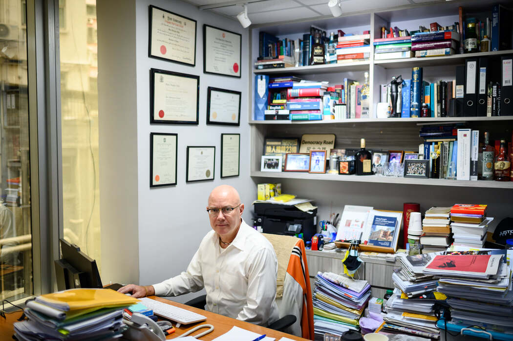
人權律師帝理邁曾打過多宗「試驗個案」，為在港難民追尋公義。
曾打過多宗非法羈留官司及人身保護令的帝理邁認為，按上述條文，未來勝訴的理據或者被削弱，形容做法是未經驗證（untested），或有潛在問題（problematic），需要在法庭上以個案挑戰。他亦批評，香港入境法律嚴苛（draconian），不認同某些個案被遣返是公平（fair）的決定，尤其當羈留者有香港永久居民的家屬或孩子，理應審慎考慮，酌情（discretion）讓他們留下。
《入境條例》修訂時，帝理邁律師樓曾向立法會遞交意見書，引述研究指聲請人被羈留，需要三倍時間處理個案。他認為，羈留者被轉移至大潭峽懲教所後，身處環境明顯比 CIC 更嚴苛。
另一個挑戰羈留決定的途徑，是人身保護令 — 由法官受理申請，決定拘押是否合法的手令。武文雄正申請中，但法援申請卻被拒，帝理邁認為申請法援的程序有時「不幸地用時過久」，形容義務協助個案的情況「不理想」，「如果係有法律理據嘅個案，個系統應該加快速度審核」，而且應有資格（entitled）取得法援。
司法機構回覆《立場》查詢，過去五年，申請人身保護令狀的個案共有 59 宗，未有備存是否涉及入境羈留的分類。
組織聲援困難 陷入資訊黑洞
8 月 23 日早上十點，CIC 關注組一行四個人，站在石澳道的路口交界 — 那是大潭峽懲教所入口，雖然連羈留中心也看不見。他們拉起寫上「聲援大潭峽被羈留人士 停止無限期羈押」的橫額，不夠半小時，約十名懲教署職員到場，還有三個便衣警察。
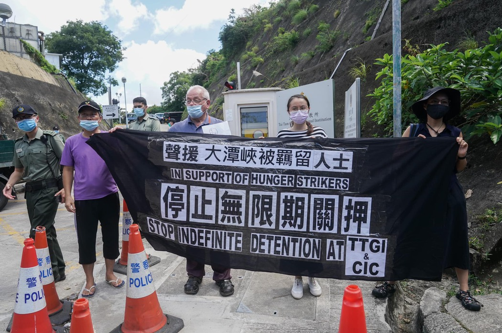
8 月 23 日，CIC 關注組成員甘浩望神父、Anna 及 Amy 曾前往大潭峽懲教所抗議。
CIC 關注組一直每月或隔兩周前往青山灣入境事務中心對出公路旁，在羈留者窗戶對面的停車場拉起橫額，以示支援。在該處呼叫口號時，中心內的人亦能呼應。但大潭峽懲教所周圍一個人也沒有，羈留者不可能看見聲援行動，也聽不見聲援的聲音。
不僅羈留者墮入一個更深更黑暗的地方，連關注組也墮入資訊黑洞中。
成員 Anna 嘆能做的比以往少，首先探訪門檻提高了許多，以往定期探訪 CIC 的義工，十個中僅一至三個能前往大潭峽探訪；加上探訪室內有九個鏡頭，訪客最近離職員不足兩米，每個對話間隔均置有一個鏡頭正對訪客，再敢言的羈留者亦有所顧忌，而且《入境條例》修訂生效後，收緊免遣返聲請的安排亦成為壓力來源。
立法會民主派議員總辭後，議會接近清一色是建制派。昔日可依頼民主派立法會議員每周向政府提問索取資料，張皓明認為現在整體而言少了渠道，因為建制派側重犯案數字，較不留意人權議題。例如法援獲批的數字、上訴階段獲得當值律師服務代表的百分比，他們均需要透過公開資料守則索取，需時更長。
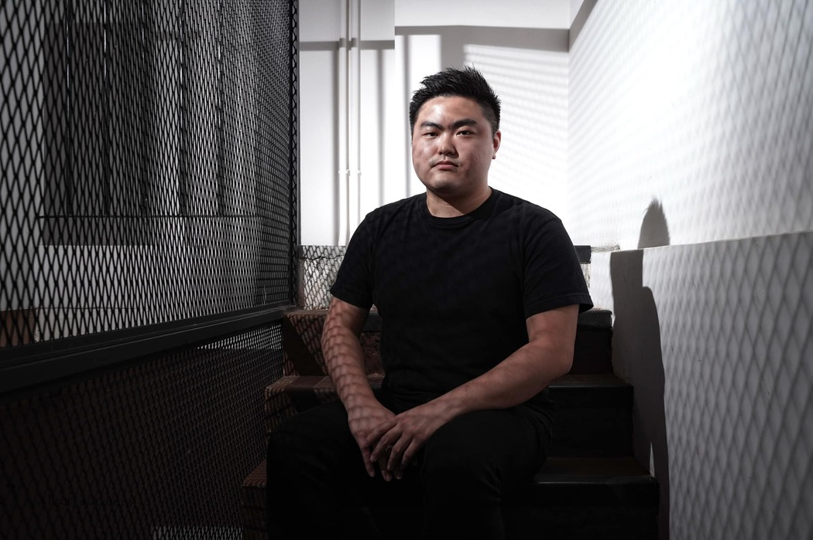
Justice Centre 高級倡議及傳訊主任張皓明
上月，循公開資料守則詢問後，入境處終於公佈青山灣入境事務中心的運作手冊。「呢幾次成功，唔代表以往一直都係容易。」張皓明說，過程中需要咬文嚼字，以政府收集數據的字眼提問，以及爭論，甚至為取得 CIC 羈留的詳細數據 — 入境處聲稱沒有備存，曾需要向申訴專員公署投訴，足足耗時一年。「個過程已 delay 咗公民社會唔知幾多年去研究呢啲問題嘅進程，因為政策制定應該基於數字，唔係強調入境羈留者就係有罪。」
十年前，入境羈留的平均日數僅 16 至 17 天，近年處方未有再公佈此數字，而現時估計被羈留最久的羈留者武文雄，已被羈留達五年。前立法會議員張超雄嘆道：「點解冇香港身份證，就可以數以月計、年計咁去 detain？雖然佢哋冇香港身份，但佢哋都係人。」
羈留中心非第 28 間監獄 邵家臻：「佢哋係27＋1」
大潭峽懲教所彷彿尋求庇護者被遣返的終點。「一個人都冇拎到擔保。」在絕望中，來自非洲、曾參與 CIC 絕食的另一羈留者問：
無所事事，一舉一動被全天候監控，令 Nelson 寧可身在獄中。「起碼可以工作，賺少少錢，呢度得食、瞓，我從未見過咁嘅生活。」他說，CIC 比監獄好，監獄又比大潭峽懲教所好，但哪裡都比回尼日利亞被政治迫害好，因此他沒有選擇，只能透過做運動排解鬱悶。
Ali 仍在單獨囚禁中，靠着一天祈禱五至七次，閱讀僅有的旁遮普語宗教書籍，熬過時光。
未來如何，他們看不見前路，智慧監獄未來卻篤定全面推行。
前年在立法會會議中，邵家臻曾提問，智慧監獄設施由管方立場出發，提升保安，但未有考慮囚友角度。「我就話 CCTV、資訊科技，有冇掉返轉，令到（外界）監察到有冇職員濫權，虐囚事件會唔會因此減少呢？」奈何不幸言中，他續道，「資訊科技係兩刃刀，可以減少虐囚，亦都可以縱容虐囚。」
「你唔可以視之為第 28 間監獄，佢哋係 27＋1。」
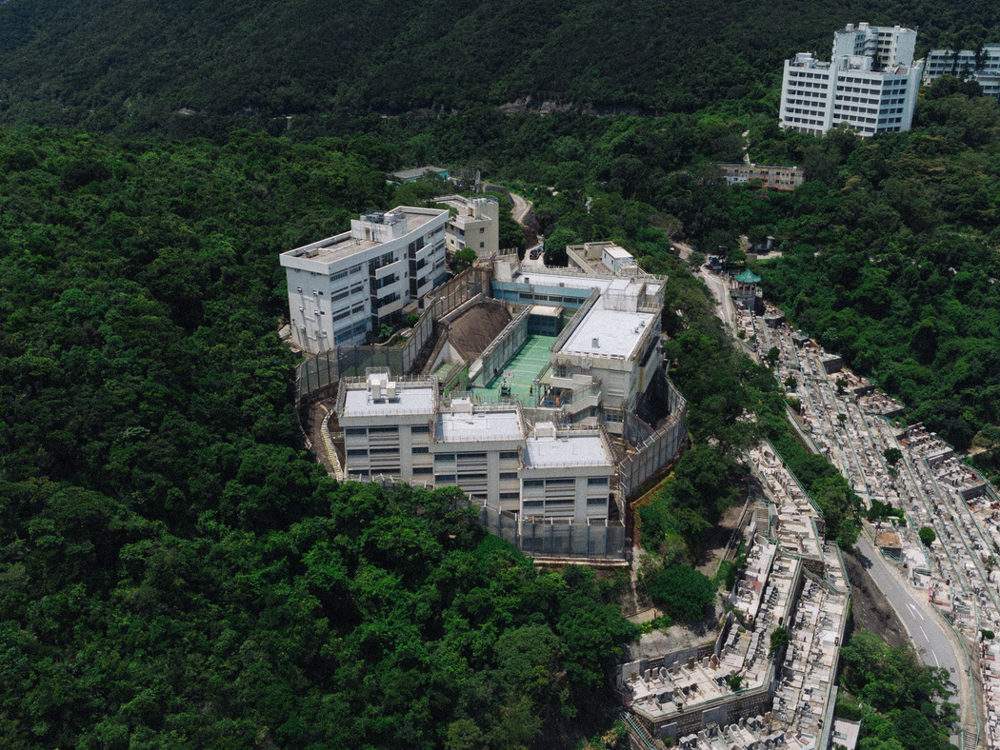
註：插圖按親眼所見、羈留者描述以及各院所圖片繪畫，非羈留者真實樣貌